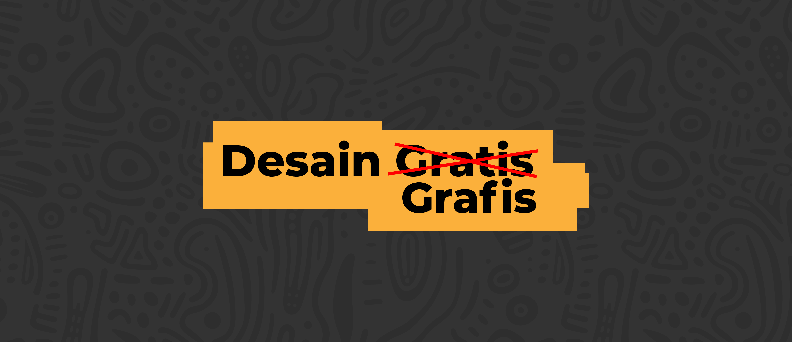
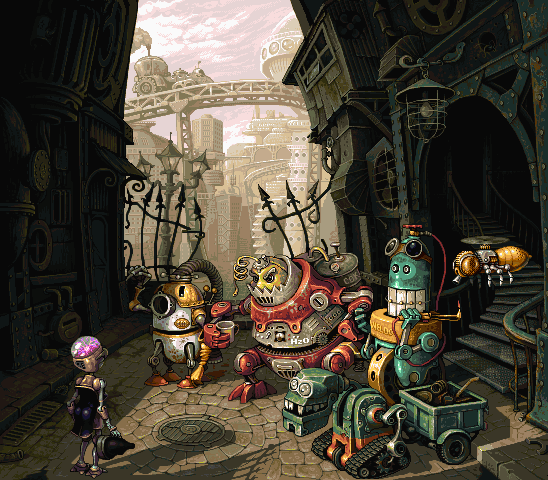
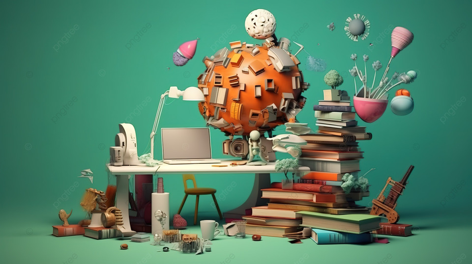

Tren Desain Grafis 2024
Sebagai desain grafis sudah seharusnya mengikuti perkembangan tren terbaru di industri ini. Dengan perkembangan teknologi yang sangat cepat, tren desain juga akan ikut berkembang dari masa ke masa. maka dari itu kita harus terus update dengan tren baru saat ini. Berikut adalah 5 tren desain pada tahun 2024 yang kalian harus ketahui. diantaranya, Bantuan kecerdasan buatan (AI), Desain Pixel, warna-warna pastel, Surealisme, illustrasi gambar tangan
Tren Desain Grafis 2024 – Segalanya akan benar-benar berbeda pada tahun 2024, terutama bagi para kreatif. Teknologi seperti kecerdasan buatan dan pembelajaran mesin telah mengguncang segalanya, dan desain grafis terkena dampak keras. Alat-alat seperti DALL-E 2 dan Midjourney mengubah permainan dengan cepat.
Sekarang, di tahun 2024, kita harus beradaptasi. Desainer dan seniman harus mendorong batas kreatif mereka untuk menghadapi perubahan ini. Mari kita lihat lebih dekat contoh-contoh yang teliti dan menginspirasi ini.
Kecerdasan buatan atau Artificial Intelligence (AI) adalah simulasi dari kecerdasan yang dimiliki oleh manusia yang dimodelkan di dalam mesin dan diprogram agar bisa berpikir seperti halnya manusia. Sedangkan menurut Mc Leod dan Schell, kecerdasan buatan adalah aktivitas penyediaan mesin seperti komputer dengan kemampuan untuk menampilkan perilaku yang dianggap sama cerdasnya dengan jika kemampuan tersebut ditampilkan oleh manusia.
Dengan kata lain AI merupakan sistem komputer yang bisa melakukan pekerjaan-pekerjaan yang umumnya memerlukan tenaga manusia atau kecerdasan manusia untuk menyelesaikan pekerjaan tersebut.AI sendiri merupakan teknologi yang memerlukan data untuk dijadikan pengetahuan, sama seperti manusia. AI membutuhkan pengalaman dan data supaya kecerdasannya bisa lebih baik lagi. Poin penting dalam proses AI adalah learning, reasoning dan self correction. AI perlu belajar untuk memperkaya pengetahuannya. Proses belajar AI pun tidak selalu disuruh oleh manusia, melainkan AI akan belajar dengan sendirinya berdasarkan pengalaman AI saat digunakan oleh manusia. Dan ini dipopulerkan oleh Chat GPT
Gambar dibawah ini contoh dari gambar yang dibuat dari kecerdasan buatan (AI)
Desain Pixel

Desain grafis piksel, juga dikenal sebagai desain grafis raster, melibatkan pembuatan dan pengeditan gambar digital menggunakan piksel individual sebagai blok penyusunnya. Dalam gambar berbasis piksel, setiap piksel berbentuk persegi atau titik kecil yang berisi informasi warna tertentu, yang secara kolektif membentuk keseluruhan gambar. Berikut adalah beberapa karakteristik utama dari desain grafis piksel: Kontrol Tingkat Piksel : Grafik piksel memungkinkan kontrol yang tepat atas setiap piksel, memungkinkan manipulasi dan pengeditan mendetail. Desainer dapat menyesuaikan warna, kecerahan, kontras, dan atribut lain dari setiap piksel untuk mencapai efek yang diinginkan.
Gambar dibawah ini contoh dari gambar yang dibuat dari Desain Pixel
Warna Pastel

Apa itu warna pastel?
Warna pastel adalah warna yang memiliki tampilan yang lembut dan kalem. Warna-warna ini biasanya diciptakan dengan menambahkan warna putih pada rona warna yang sudah jenuh untuk membuatnya lebih halus. Lebih jauh lagi, warna-warna ini bisa berkisar dari merah muda terang, biru, hijau, kuning, ungu, dan bahkan abu-abu. Warna-warna ini sempurna untuk menciptakan suasana yang menenangkan dalam desain. Sifat lembut warna pastel juga dapat digunakan untuk menghadirkan kesan elegan atau kecanggihan pada proyek apa pun. Warna-warna pastel telah populer dalam desain selama berabad-abad, terlihat dalam segala hal, mulai dari wallpaper hingga pakaian. Warna-warna ini telah lazim pada abad ke-20, dengan tahun 1950-an yang sering dikenal sebagai 'dekade pastel'.
Roda Warna Pastel
Roda warna pastel memadukan semua jenis rona, rona, dan corak pastel yang berbeda-beda. Roda warna ini terdiri dari 12 warna primer, masing-masing dengan nada dan bayangannya yang khas, mulai dari merah muda yang lembut, biru, kuning, ungu, dan hijau.

Surealisme

Apa itu Surealisme?
Surealis merupakan gerakan seni yang mulanya tumbuh di Eropa dan kemudian meluas secara internasional. Gerakan surealisme banyak menggali gagasan tentang mimpi, ilusi, dan fantasi yang didorong otomatisme dan asosiasi bebas. Surealisme adalah aliran yang menghadirkan kontradiksi antara mimpi dan realita menjadi nyata dalam gambar yang memperlihatkan objek nyata dalam keadaan yang tidak mungkin terjadi, seperti dalam mimpi atau alam bawah sadar manusia. Salah satu yang harus menjadi catatan penting dalam aliran seni rupa surealisme adalah surealisme tidak sama dengan fantasi. Berbeda dengan fantasi, surealisme mengambil objek-objek keseharian yang terdapat di kehidupan dan alam kita lalu memanipulasinya sedemikian rupa hingga tidak tampak seperti kenyataan lagi. Surealisme terinspirasi dari citra mimpi dan bawah alam sadar manusia. Pengaruh gerakan ini menguat bukan hanya dalam karya seni rupa, tapi juga sastra, teater, musik, film, desain grafis, dan mode. Dalam desain grafis, aliran ini berkaitan dengan pembangunan citra sebuah produk yang mampu memenuhi kebutuhan audiensnya. Gaya surealis berkembang luas dan banyak ditafsir ulang dan dimodifikasi dalam aplikasi dunia desain grafis maupun komunikasi visual sejak era analog hingga era digital sekarang ini. Penerapan gaya surealis yang bisa kita temui dalam dunia desain grafis yaitu digital imaging yang banyak digunakan dalam iklan-iklan cetak atau iklan audio visual.
Unsur-Unsur Surealisme
Berikut ini adalah beberapa unsur Surealisme yang membantu terciptanya sebuah karya Surealis. Unsur-unsur tersebut antara lain:
1. Mitos
Mitos merupakan sebuah ungkapan dari dalam jiwa manusia. Tiap manusia mempunyai ketakutan di dalam dirinya yang mereka percaya. Sementara di dalam Surealisme, mereka akan menampilkan mitos-mitos tersebut, yang mungkin kita percaya atau kita takuti. Dengan adanya mitos, nilai sebuah seni dari karya Surealis akan semakin bertambah.
2. Mimpi
Mimpi adalah salah satu jalan terbaik untuk mengungkapkan suatu hal yang berasal dari alam bawah sadar. Dengan adanya mimpi, hal-hal yang tidak nyata bisa diciptakan dan direalisasikan ke dalam sebuah bentuk karya.
3. Metamorfosis
Metamorfosis biasanya akan menggunakan teknik automatic, frottage , drawing, fumage, decalcomania, cadavre exquis, dan teknik pengembangannya.
Desain Heavy Composition

Apa itu Desain Heavy Composition ?
Komposisi merupakan penggabungan dari banyak bagian menjadi suatu bentuk yang serasi. Definisi lengkapnya, komposisi adalah sesuatu yang disusun secara serasi/harmony dengan berlandaskan prinsip-prinsip desain, sehingga tercapai kesatuan antara unsur-unsur desain (total organization).


Elemen kunci dari tren Heavy Composition pada tahun 2024:
Saya seorang mahasiswa berumur 18 tahun yang sedang bergelut di dunia visual. Pengalaman saya di dunia visual sudah sejak saya duduk di bangku kelas 8, Sekolah Menengah Pertama, yaitu pada tahun 2019. Tapi mulai melangkah ke tahap profesional pada akhir tahun 2021 dan sampai sekarang. saya seorang Freelancer Desain Grafis. Saya memiliki style yang minimalis dan sedikit abstrak, namun semua itu disesuaikan dengan proyek yang sedang saya kerjakan. Saya telah mengerjakan beragam proyek, termasuk desain logo, Branding, ilustrasi digital.
| NAMA | DAFFA ILMADA FAKHRIZA HAMDI |
| NIM | 10123279 |
| KELAS | IF-7 |